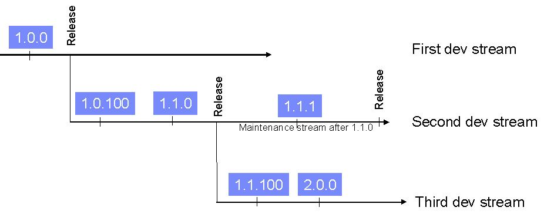

NOTE: This proposal has been implemented in Eclipse 3.2. Guidelines are found on the Version Numbering wiki page.
Summary
The Eclipse team currently changes their plug-in version numbers to match each major release of Eclipse (e.g., 2.1, 3.0). This is a convenient way of understanding the origin of plug-ins but does not capture the actual semantics of the changes that occurred. Here we outline the current use of version numbers and propose guidelines for using plug-in version numbering to better indicate levels of compatibility.By Pascal Rapicault, Mike Wilson, John Arthorne, Jeff McAffer, IBM
Last Modified: December 20, 2005
Current Eclipse practice calls for the teams to increment plug-in version numbers to match the upcoming release of Eclipse. For example, during the eclipse 3.1 development cycle, our plug-in version numbers went from 3.0.0 to 3.1.0, such that when we delivered Eclipse 3.1 all plug-ins (save a few third party ones) were versioned as 3.1.0. This is convenient because it allows people to look at the plug-in version number and immediately understand what version of Eclipse that plug-in is from.
This approach has several drawbacks:
The following proposal is twofold:
This section contains a set of guidelines expressing how to evolve plug-in version numbers in a way that captures the nature of the changes that have been made.
Reminder: in eclipse, version numbers are composed of four (4) segments: 3 integers and a string respectively named major.minor.service.qualifier.
Each segment captures a different intent:The major segment number should be increased when a plug-in changes in a non binary compatible way. When the major segment is changed
the minor and service segments are reset to 0.
Example: From the version 2.2.7, an incompatible change would lead to 3.0.0.
By definition, such changes should not be made when working in a maintenance stream.
First development stream - 1.0.0 Second development stream - 1.0.100 (indicates a bug fix) - 1.1.0 (a new API has been introduced) The plug-in ships as 1.1.0 Third development stream - 1.1.100 (indicates a bug fix) - 2.0.0 (indicates a breaking change) The plug-in ships as 2.0.0 Maintenance stream after 1.1.0 - 1.1.1 The plug-in ships as 1.1.1
Because changing the version number of a plug-in on every commit can be burdensome to the development team, we recommend only applying the previous guidelines once per release cycle. However, since we want to enable the use of the update manager by the development teams, we will use the qualifier segment to indicate changes between builds.
Since Eclipse 3.1, PDE Build can automatically derive the value of the qualifier from the tag associated with the plug-in
in the map file that has been fed as input to the build. This leaves the responsibility to the developer preparing the input for the build
to tag their plug-ins with a value that is lexicographically higher than the previous one. To facilitate this, we recommend the usage of the
date formatted as YearMonthDay or a number that you increment everytime.
Example: The map file for the plug-in P indicates v20050506, and P's version is 4.2.3. The resulting fully qualified version number would be
4.2.3.v20050506.
Deriving the qualifier from the build input offers the advantage that if the plug-in code has not changed, no new version will be created
and therefore update manager won't download the plug-in again.
Plug-ins that require other plug-ins must qualify their requirements with a version range since the absence of a version range means that any version
can satisfy the dependency. Given that all the changes between the version x.0.0 and the version x+1.0.0 excluded must be compatible
(given the previous guidelines); the recommended range includes the minimal required version up-to but not including the next major release.
Example JFace 3.1.0 should probably express the following requirement on SWT: [3.1.0, 4.0.0).
Also, while setting values for prerequisites, watch for opportunities to widen the set of plug-ins against which a plug-in can work.
Example: A plug-in using basic functions from the job API, may express a dependency on runtime 3.0.0 ( [3.0.0, 4.0.0) ) instead of 3.1.0 ( [3.1.0, 4.0.0) ).
Plug-ins re-exporting other plug-ins tie themselves to the re-exported plug-ins, since they are making the re-exported plug-ins part of their API.
Therefore, the version of such plug-ins must indicate the most significant type of change between all the plug-ins they re-export and the changes made locally.
Example: JFace 8.4.2 re-exports SWT 1.1.1 and Commands 2.2.2.
Case 1: if Commands increases its service segment to 2.2.3, JFace version does not need to change.
Case 2: if Commands increases its service segment to 2.2.3, and SWT its minor segment to 1.2.0, JFace version would be 8.5.0.
Case 3: if JFace makes incompatible changes, JFace would change to 9.0.0 covering changes from re-exported plug-ins.
Exported packages being used as service APIs must have a version number. The guidelines to evolve those version numbers are the same as for plug-ins. For plug-ins importing individual packages, you should follow the same guidelines as when requiring a plug-in to specify the version range of packages being imported.
In the javadoc, @since tags are used to indicate the version of a plug-in in which a specific API has been added. Because javadoc
describes API, only the first two segment of the plug-in version number should be used. This represents a change
with the current practice where @since indicates the development stream. In addition to using the plug-in version, we recommend to prefix
the version number by the plug-in id. This allows to track APIs moving from a plug-in to another (this can happen when a plug-in is split
into multiple plug-ins but the package names are kept).
Example: In the 3.2 development stream, the API of the new plug-in org.eclipse.core.filesystem should be tagged as follows:
/**
* This class is the main entry point for clients of the Eclipse file system API. This
* class has factory methods for obtaining instances of file systems and file
* stores, and provides constants for option values and error codes.
*
* This class is not intended to be instantiated or subclassed.
*
* @since org.eclipse.core.filesytem 1.0
*/
Features are a grouping mechanism that supports reasoning in terms of sets of plug-ins. Therefore, features hide the plug-in boundaries of the plug-ins they contain and act as if their API was the set of all the APIs of all the consituting plug-ins. Because of this, features are akin to plug-ins re-exporting other plug-ins and should follow the same versioning guidelines.
To avoid the brittleness caused by version changes in required features, we recommend feature authors favor the expression of their dependencies at the plug-in level, rather than at the feature level. To be more precise, all the immediate plug-ins required by the plug-ins included in a feature should be listed as plug-in prerequisite of the feature. This approach has the benefit of isolating feature authors from changes that do not impact them.
Example
Case 1: Today the feature org.eclipse.gef is as follows:
requires feature org.eclipse.platform 3.1.0
contains plugins:
org.eclipse.draw2d 3.1.0
org.eclipse.gef 3.1.0
Case 2: In the new model it should be:
requires feature org.eclipse.platform 3.1.0
contains plugins:
org.eclipse.draw2d 3.1.0
org.eclipse.gef 3.1.0
requires plugins:
org.eclipse.core.runtime [3.1.0, 4.0.0)
org.eclipse.ui.views [3.1.0, 4.0.0)
org.eclipse.ui.workbench [3.1.0, 4.0.0)
org.eclipse.jface [3.1.0, 4.0.0)
org.eclipse.swt [3.1.0, 4.0.0)
In case 1, if the version of the org.eclipse.platform feature changes to 4.0.0 (because org.eclipse.core.resources changes
its major version number), org.eclipse.gef is required to deliver a new version of its features. In case 2, such changes are transparent
to the author of gef.
When version numbers are evolving all at once, looking at the feature version is enough to understand which eclipse build is
being run (1). However, this is no longer possible because versions evolve independently. To address this problem we are proposing
the introduction of a so called "marketing" string that will
be used to show a more "meaningful to the end user" number (for example the name of the "eclipse train", see bug #108146).
It is important to note that no semantics can be attached to this string nor can it be used to express dependency among features.
Example: The version number of the platform feature could be 3.1.7.v20051010 allowing the precise capture of dependencies among
features, and the marketing string could be still be 3.1 or even "Zebra".
(1) This has never been completly true as some plugins do not have matching numbers (e.g., lucene, tomcat, junit...),
and no warmth is generated regarding additions or deletions of plugins or features.
If we decide to follow these new guidances, we can retrofit the 3.2 plug-ins with "correct" version numbers. Starting now avoids the situation where Eclipse 3.1 based plug-ins do not work on the released 3.2 because of resolution problems (rather than because of actual incompatibilities).
This effort needs to be coordinated inside each deliverable (one deliverable being SDK, or GEF, or EMF...) by a person that will be responsible for telling each plug-in owner when to change their version numbers.Updating the plug-ins
Updating feature version number
For teams not using a map file-like mechanism, PDE build will generate a value derived from the date and time of day. Doing this is, however, not recommended since even plug-ins whose code has not been changed yet will be given a new qualifier causing update to unnecessarily download the binary.
For teams having a mechanism other than map files, the build can be provided with a file where the value of qualifier will be read.
Here is an outline of the changes that would be required: